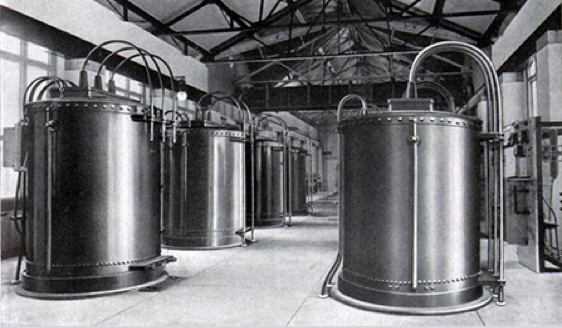

<!DOCTYPE html>
<html lang="en">
<head>
    <title>Add Map</title>

    <link rel="stylesheet" type="text/css" href="./style.css" />
    <script src="./index.js"></script>
</head>
   
</html>

<body>
    <header></header>
    <section>
            <p>
                Open 365 days a year, Niagara Falls State Park has awe-inspiring scenery! It also features thrilling attractions, interactive exhibits, miles of hiking trails, and delectable dining options in a family-friendly environment. It's an adventure-packed experience! No passport is needed to experience an unforgettable and breathtaking Niagara Falls vacation.
            </p>
            
        </section>
    <section>
                
                <p>Looking for a fun way to "explore the roar?" The Niagara Falls Maid of the Mist tour takes visitors on an excursion into the basin of Niagara Falls State Park’s Horseshoe Falls. The Maid of the Mist boat tour in Niagara Falls, NY has been described by generations of visitors as one of the highlights of their trip.</p>
                <button>Read More</button>
                <aside>
                    <h2>Prices</h2>
                    <p>Admission Rates (at the door):
                        Adult: $12
                        Child (Ages 6-12 years): $9
                        Child (Ages 5 and Under): Free, must be accompanied by a guardian</p>
                        <h3>2020 group Prices</h3>
                        <p>Adult: $8 per person
                            Youth: $6 per person</p>
                </aside>
                <button>Read More</button>
                
                <p>The world changed at Niagara Falls! Go beyond the brink and get closer to the Falls than you ever imagined at the Cave of the Winds. Plus take in the wonder and history of the Falls at the new indoor multimedia experience, the World Changed Here Pavilion, which is open year-round!</p>
                <button>Read More</button>
                
            </section>
            <button>See More Attractions</button>
    <section>
                    <h2>Discovery Pass</h2>
                    <p>Get even closer to the Falls, and buy a Niagara Falls USA Discovery Pass and experience thrilling attractions including the Maid of the Mist, Cave of the Winds, Aquarium of Niagara, Niagara Adventure Theater and unlimited rides on the Scenic Trolley for the day. As an added bonus, take advantage of bonus discounts and free gifts at other local attractions including Old Fort Niagara, the New York Power Authority Niagara Power Project, and Artpark.</p>
                    <h3>What's Included?</h3>
                    <h4>Cave of the Winds</h4>
                    <p>Nowhere else on Earth brings you closer to the Falls than the Hurricane Deck at the Cave of the Winds Tour, which is 175 feet down into the Gorge</p>
                    <h4>Adventure Theater</h4>
                    <p>Discover the myths and mysteries of the Falls in the film, Niagara: Legends of Adventure at Niagara Adventure Theater.</p>
                    <h4>Aquarium of Niagara</h4>
                    <p>The Aquarium of Niagara, located just a few blocks away from Niagara Falls State Park, will give you the opportunity to discover all different kinds of life under the sea.</p>
                </section>
    <section>
                        
                        <h1>Feedl the Power of the Falls</h1>
                        <p>Experience the power of Niagara Falls up close when you ride the world famous Maid of the Mist Boat tour or stand under the Bridal Veil Falls in the Cave of the Winds. Learn more about Niagara Falls legends and daredevils at the Niagara Adventure Theater, visit the Aquarium of Niagara to meet new aquatic friends from under the sea and get hands-on at the Discovery Center. Do it all with a Niagara Falls USA Discovery Pass and make memories that will last a lifetime!</p>
                    </section>
    <section>
                            
                            <p>Geologically speaking, Niagara Falls is quite young. Some 12,000 years ago, the water plunged over the edge of the Niagara Escarpment--a steep slope that runs east/west from New York through Ontario, Michigan, Wisconsin and Illinois. Since the escarpment is most famous as the cliff over which the Niagara River drops off at Niagara Falls, it was named the Niagara Escarpment.
                        
                                The formation of Niagara Falls was a slow process that still continues today. The annual freezing and thawing of the Niagara River wears away at the rocks under the surface and gradual erosion and periodic rockfalls steadily move Niagara Falls farther upstream. Modern influences, however, have caused the Falls to wear away less quickly. Remedial work has been done to preserve the Falls and the volume of water has been reduced by diversion for hydroelectric power.</p>
                                
                                <p>Native Americans living in the Niagara region were most likely the first people to behold the power of Niagara Falls. The first European to document the area was a French priest, Father Louis Hennepin. During a 1678 expedition, he was overwhelmed by the size and significance of Niagara Falls. When he returned to France, Hennepin published an account of his travels in "A New Discovery." The book brought Niagara Falls to the attention of the western world for the first time and inspired further exploration of the region.</p>
                                
                                <p>The potential power of Niagara Falls attracted industrialists who worked to harness its force using water wheels to drive their mills and factories. The world’s first large-scale hydroelectric generating station opened in Niagara Falls in 1895. The plant used the direct current (DC) system, however, which could only transmit electricity 100 yards.
                        
                                    In 1896, the famous electrical engineer Nikola Tesla proved that he could transmit electric from Niagara Falls to Buffalo, New York, using his new alternating current (AC) induction motor. That marked the first long distance commercial use of the AC system that is still used around the world today. The Niagara Gorge Discovery Center is located above the site of the Schoellkopf Power Station, from which electricity was first sold as a commodity.</p>
                        </section>
    <section>
                                <div>
                                    <h1>Plan your trip</h1>
                                
                                </div>
                                <button></button>
                            <div>
                                <h2>Niagara Falls USA Winter WOnder Savings Pass</h2>
                                
                                <p>Experience Niagara Falls this winter and save. Check out the coupons that can be used through February 28, 2021!
                            
                                    Winter at Niagara Falls is really wonderful. And saving money isn't bad either. You can experience both with the Niagara Falls USA Winter Wonder Savings Pass. </p>
                                    <button>Read More</button>
                            </div>
                            <div>
                                <h2>Discover Niagara Shuttle</h2>
                                
                                <p>
                                    Park your car and experience Niagara's iconic landscape, rich history and the thriving culture and communities along the scenic Niagara River with the ease and convenience of a hop-on/hop-off shuttle. Enjoy a day of discovery as you connect to 15 destination sites along the 14-mile route from the "Falls to the Fort." 
                                </p>
                                <button>Read More</button>
                            </div>
                            <div>
                                <h2>Download the Walking Tour App</h2>
                                    <button>Read More</button>
                            </div>
                            <div>
                                <h2>Niagara Falls Weather</h2>
                                    <button>Read More</button>
                            </div>
                            </section>
    <section>
                                    <h1>Come for the Wonder,
                                Stay for the Adventure</h1>
                                <p>With plenty of things to do in Niagara Falls- from exploring awe-inspiring natural beauty, hiking  miles of trails through Niagara State park, or getting soaked on the Hurricane Deck- it’s the perfect destination for a family vacation or nature retreat. A Niagara falls trip is guarenteed to have something for everyone!</p>
                                
                                </section>
    <section>
                                        <p>Situated along the U.S./Canadian border, Niagara Falls State Park welcomes travelers from around the world. To reach Niagara Falls State Park, most visitors simply fly into the Buffalo Niagara International Airport (BUF) or drive in on Interstate 90. Plan your trip by using our map and directions to help you find the Falls with ease, and explore Niagara Falls State Park. </p>
                                        <p>GPS Navigation
                                    
                                            The best Niagara Falls address for your GPS system is:
                                            
                                            24 Buffalo Avenue
                                            
                                            Niagara Falls, NY, 14303
                                            
                                            The State Park does not have an actual physical address, therefore, this will bring you to the cross streets of 1st Street and Buffalo Avenue - which is the intersection at the entrance to the park and the base of the bridge to Goat Island.
                                            
                                            The exact coordinates of Niagara Falls are:
                                            
                                            Latitude 43.081528
                                            Longitude -79.064240</p>
                                            <iframe src="https://www.google.com/maps/embed?pb=!1m18!1m12!1m3!1d46611.81778583913!2d-79.04384676166707!3d43.09950013457371!2m3!1f0!2f0!3f0!3m2!1i1024!2i768!4f13.1!3m3!1m2!1s0x89d363ea29e633b7%3A0x61975ae4b9c5aab3!2sNiagara%20Falls%2C%20NY!5e0!3m2!1sen!2sus!4v1621026711251!5m2!1sen!2sus" width="600" height="450" style="border:0;" allowfullscreen="" loading="lazy"></iframe>
                                    </section>
    <section></section>
    <section></section>
    <section></section>
    <section>
                                                        
                                                    </section>
    <footer></footer>
</body>